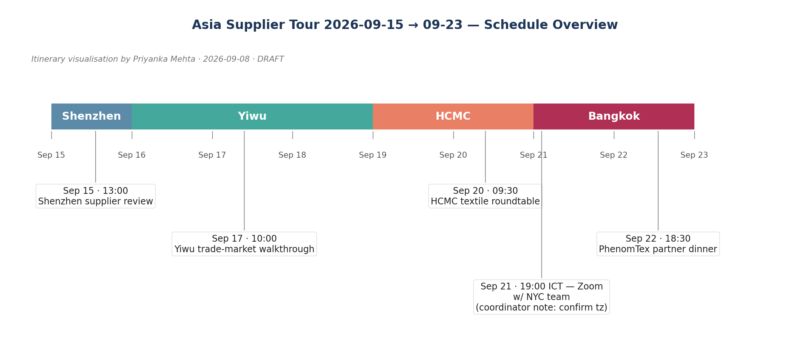
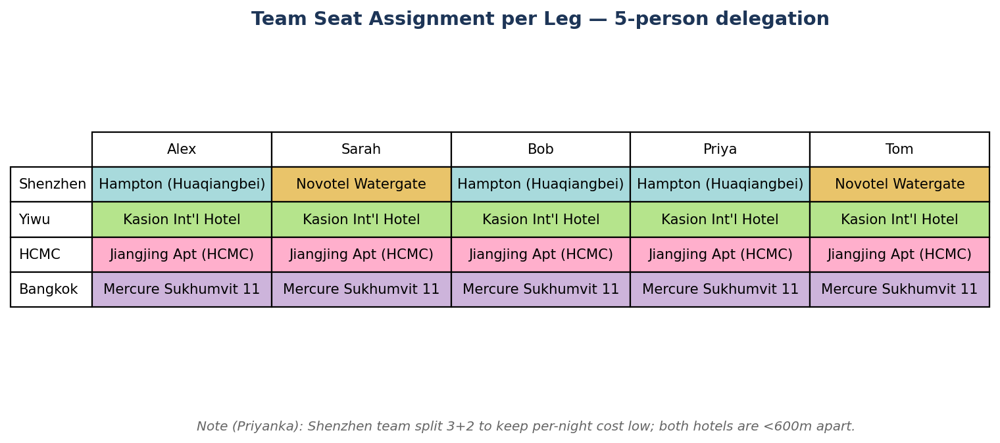

5-person delegation (Alex Chen, Sarah Goldberg, Bob Tanaka, Priya Iyer, Tom Reilly) on a 12-day Asia supplier tour: Shenzhen → Yiwu → Ho Chi Minh City → Bangkok, 2026-09-15 → 09-23.
Selections below are based on SerpAPI google_hotels searches (mocked at http://127.0.0.1:4501/api). Each leg's section embeds a <script type="application/json"> block referencing the dataset id and the chosen property's property_token.

client_meetings.ics. (pixel labels reflect the latest update from Priyanka)We are placing 3 colleagues at Hampton by Hilton Shenzhen Futian Huaqiangbei and the remaining 2 (Sarah and Tom) at Hotel Novotel Shenzhen Watergate, 600m apart. Both are 4-star, allowlisted, and the cost split is favorable for the budget.
Per-night cost: $260 (Hampton) and $245 (Novotel). Both hotels are 4-star, both in Huaqiangbei.

Shenzhen night cost $260/night standard tier — within Greater China Tier 1 standard cap of $280.
Selected Kasion International Hotel Yiwu — 5-star, walking distance to International Trade Market, rated 4.4 with strong Service breakdown (416 positive vs 69 negative).
Yiwu hotel rated 4.4 with 6 reviews_breakdown categories — slightly lower than the Yiwu International Conference Center which is rated 4.9 but is on a 5-star tier we are not booking.
Selected Yiwu hotel does not have an in-property business center; team will use the Yiwu International Trade Market's coworking facilities.
Selected Flight VN-321 (Vietnam Airlines, arrives 23:50 ICT) — direct connection from Yiwu via Shanghai, lowest fare among inbound options.
See flight_options.pdf p3 for full options.
Selected hcmc-inbound flight has a 90-minute stopover in Shanghai (PVG).
On Sept 21 at 19:00 ICT we will join the Helios NYC quarterly review by Zoom from the HCMC hotel — convenient evening slot before the next-day client roundtable.
Per client_meetings.ics the NYC participants will dial in from their morning slot.
Selected Mercure Bangkok Sukhumvit 11 (contracted-tier 4-star, on §3 allowlist) at USD 243/night ($486 total for 2 nights all-in). Confirmed amenities include outdoor pool, spa, free Wi-Fi.
Backup pick if budget cuts further: Vintage Gallery Sukhumvit 3-Bedroom Family House — $114/night, 5.0 rating, sleeps 6, character property near BTS.
Decided to add Platinum Premium Deluxe Apartments as a weekend extension option for Sept 23 evening — the rooftop outdoor pool will be perfect for end-of-trip team relaxation, and the Free Wi-Fi covers any last-minute client follow-ups.
This is a soft-add: only relevant if Bob and Priya extend their stay one extra day for personal time. Property has 'Free Wi-Fi' confirmed in mock amenities.
Bangkok 2-night all-in including taxes & fees (per Mercure Bangkok Sukhumvit 11): $456 total.
| Hotel | Rate (USD) | Nights | Total all-in (USD) |
|---|---|---|---|
| Mercure Bangkok Sukhumvit 11 | $228 | 2 | $456 |
We will book the Mercure Bangkok Sukhumvit 11 stay on a non-refundable rate for a 7% saving over the standard rate.
Saving rationale: 7% off list rate; team has the final itinerary locked, so cancellation flexibility is unlikely to be needed.
Mercure Bangkok Sukhumvit 11 is in a vibrant dining area with the airport and Lily Fu's Authentic Thai Restaurant within taxi distance — should cover all dietary preferences for the team.
Bob (gluten-free) will use room service for dinners; we did not filter the area for gluten-free options.